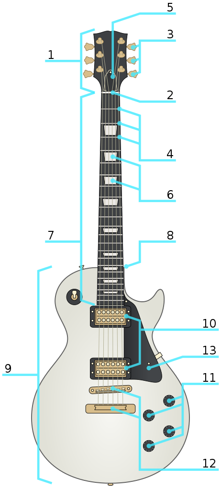

The electric guitar is important instrument in any band. Electric guitars were inveted in 1932 and were quickly adopted by jazz musicians. Initially, electric guitars were built to have similar fetures to spanish guitars. However, around the 1941 electric guitars designs started switching to solid bodies.
Knowing the parts of the guiar is important before learning how to play it. A list of parts is illustrated below:
